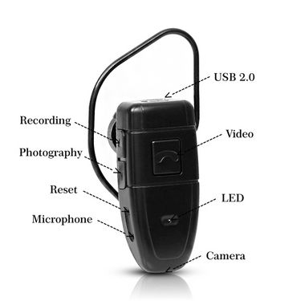
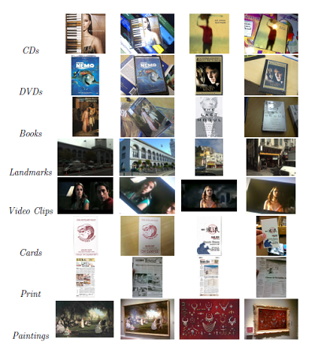
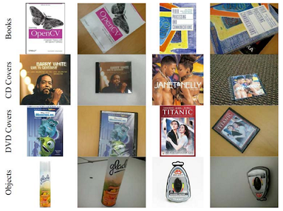

Vijay Chandrasekhar - Datasets
List of Data Sets
Egocentric Video Data Sets
Stanford Mobile Visual Search Data Set
Stanford Mobile Augmented Reality Data Set
Stanford Compact Descriptors for Visual Search (CDVS) Patch Data Set
Egocentric Video Data Sets
|  |
We are interested in egocentric data, that is autobiographical in nature i.e. capturing the activities of a single individual over extended periods of time (life-logging). Prior to this, none of the existing data sets have a notion of “query” and “database” data, which we require for object-retrieval experiments. In our work, the “database” consists of the video sequences captured by the person, while queries are snap-shots of objects or scenes of interest seen by the person, which can be retrieved from the database. Our video database is collected by two different users: we name the data sets as Egocentric (1) and Egocentric (2). We use a BH-906 spy-camera for collecting data, which is worn over the ear like a blue-tooth ear piece. The BH-906 has a short battery life: as a result, each video segment is typically less than half an hour. The camera has limited field of view, and captures data at VGA resolution (640 x 480) at 30 frames per second. Each data set consists of over 10 hours of video data captured over a week. There are 100 queries for each video data set. |
Download Link and Citation
Dataset ( Link)
Vijay Chandrasekhar, Wu Min, Xiao Li, Cheston Tan, Bappaditya Mandal, Liyuan Li, Joo Hwee Lim , "Efficient Retrieval from Large-Scale Egocentric Visual Data Using a Sparse Graph Representation", Proceedings of CVPR Workshop on Egocentric Vision, Columbus, OH, June 2014. (Paper)
V. Chandrasekhar, W. Min, L. Xiaoli, C. Tan, L. Liyuan and Joo-Hwee Lim, "Incremental Graph Clustering for Efficient Retrieval from Streaming Egocentric Video Data", Proceedings of International Conference on Pattern Recognition, Stockholm, Sweden, August, 2014. (Paper)
Stanford Mobile Visual Search Dataset
|  |
We propose the Stanford Mobile Visual Search data set. The data set contains camera-phone images of products, CDs, books, outdoor landmarks, business cards, text documents, museum paintings and video clips. The data set has several key characteristics lacking in existing data sets: rigid objects, widely varying lighting conditions, perspective distortion, foreground and background clutter, realistic ground-truth reference data, and query data collected from heterogeneous low and high-end camera phones. We hope that the data set will help push research forward in the field of mobile visual search. |
Download Link and Citation
Dataset ( Link)
V. Chandrasekhar, D. Chen, S. S. Tsai, N. M. Cheung, H. Chen, G. Takacs, Y. Reznik, R. Vedantham, R. Grzeszczuk, J. Bach, and B. Girod, "The Stanford mobile visual search dataset", Proceedings of ACM Multimedia Systems Conference (MMSys), San Jose, California, February 2011. (Paper)
Stanford Streaming Augmented Reality Dataset
|  |
We introduce the Stanford Streaming MAR dataset. The dataset contains 23 different objects of interest, divided to four categories: Books, CD covers, DVD covers and Common Objects. We first record one video for each object where the object is in a static position while the camera is moving. These videos are recorded with a hand-held mobile phone with different amounts of camera motion, glare, blur, zoom, rotation and perspective changes. Each video is 100 frames long, recorded at 30 fps with resolution 640 x 480. For each video, we provide a clean database image (no background noise) for the corresponding object of interest. |
Download Link and Citation
Dataset ( Link)
M. Makar, S. S. Tsai, V. Chandrasekhar, D. M. Chen, B. Girod, "Inter-frame Coding of Canonical Patches for Mobile Augmented Reality", Proceedings of IEEE International Symposium on Multimedia (ISM), Irvine, CA, December 2012 (Top 5 Papers). (Paper)
Stanford CDVS Patches Dataset
 |
We create a patch dataset, CDVS, with 100,000 matching pairs, using the same methodology as Winder and Brown. The CDVS datasets consists of canonical scaled and oriented patches around Difference-of-Gaussian interest points from the 5 data sets used in the MPEG-CDVS standard: Graphics, Paintings, Video, Buildings and Common Objects. The Winder and Brown data sets consist of patches from a small number of objects: Statue of Liberty, Notredame and Trevis, while the proposed CDVS data sets are drawn from images of thousands of objects and tens of thousands of matching image pairs. This is useful for optimizing parameters for the MPEG-CDVS standard. |